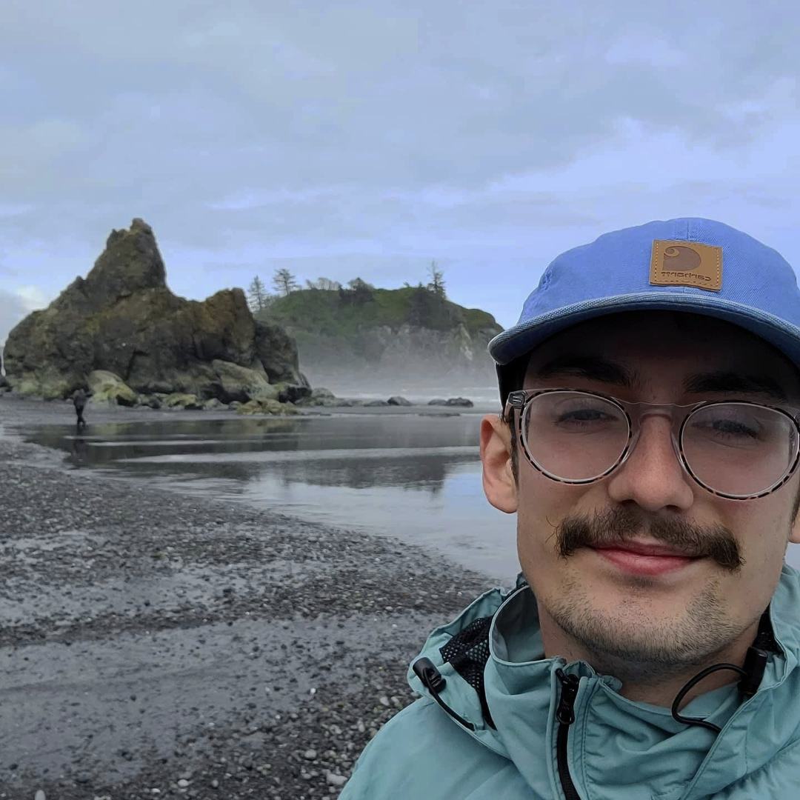

Grant Gallagher
Email- granttgallagher@lewisu.edu
Discord- grantgallagher
Getting to know eachother

Introduction
Hi im Grant. I'm pursuing a degree in IT. I grew up near Lewis ,so it makes a
great fit. I love to play sports, or being outside doing something. I also have a
english springer spaniel puppy that can always be a handful.
What I Hope to Learn in this Course
- I would Like to from a much greater understanding of backend programming.
- I would like to learn skills in CSS beyond the most basic.
- I think just learning more about website hosting can be interesting.
My Favorite Hobby / Activity
One of my favorite hobbies is to go camping or backpacking.
I have really enjoy travelling over the last few years, but travelling can get quite
expensive. This has led to one of my favorite ways to travel, in a tent.
Fun Fact
I used to be a Jet engine mechanic with the air force.
Greatest Innovation